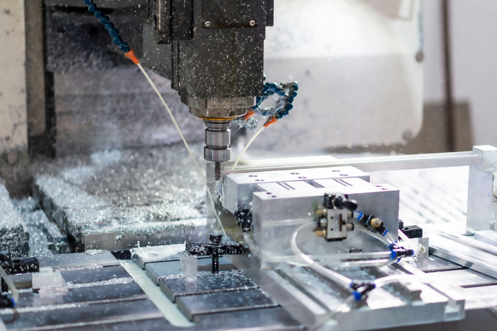

Six domaines maîtrisés, une chaîne de fabrication intégrée — du modèle en aluminium au gabarit de contrôle dimensionnel. Un seul interlocuteur pour toute la prestation.

Fabrication de plaques modèles multi-empreintes taillées dans la masse à partir de blocs aluminium monobloc haute densité. La stabilité dimensionnelle est garantie sur la durée.
Conception et fabrication de boîtes à noyaux en acier et aluminium pour fonderie sable. Parties mobiles coulissantes usinées avec précision pour faciliter l'extraction et garantir la répétabilité.
Fabrication de modèles en résine polyuréthane pour fonderie sable, toutes géométries. Excellente résistance à l'usure et au choc pour des séries de production importantes.
5 centres d'usinage 3 axes pour pièces à tolérances serrées. Fraisage de précision sur acier, aluminium, bronze, plastiques usinables, résine et bois. Tolérances jusqu'au 1/100e de millimètre.
Fabrication de gabarits dimensionnels en aluminium pour contrôle métrologique des empreintes. Permettent une vérification rapide, répétable et fiable sur le poste de production.
Usinage de pièces mécaniques sur mesure, tous secteurs d'activité. Fraisage, perçage, taraudage multi-faces sur une large gamme de matières. De la pièce unitaire à la petite série.
| Machine / Opération | Quantité | Matières | Précision |
|---|---|---|---|
| Centre de fraisage CNC 3 axes | 5 machines | Acier, alu, bronze, plastiques, résine, bois | ± 0,01 mm |
| Modelage aluminium | Dimensions max à compléter | Aluminium | ± 0,01 mm |
| Boîtes à noyaux | Dimensions max à compléter | Acier, aluminium | ± 0,01 mm |
| Gabarits de contrôle | Dimensions max à compléter | Aluminium | ± 0,01 mm |
* Dimensions maximales usinables à compléter avec David.
Conception et usinage assistés par ordinateur — du modèle 3D à la fabrication.
Décrivez-nous votre besoin — nous vous répondons rapidement avec une proposition technique adaptée.